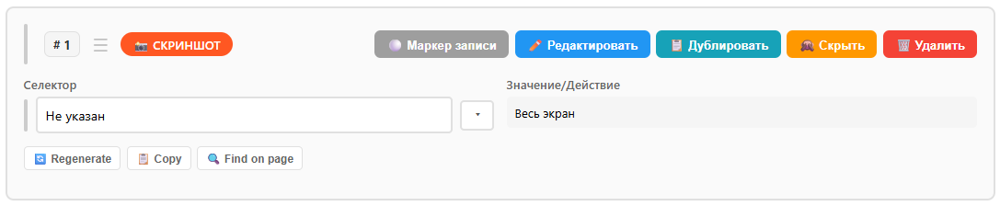
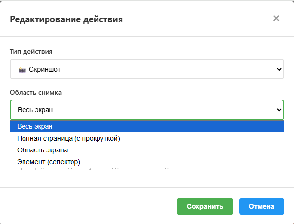

⚡ Quick Start
Click the extension icon on the Chrome toolbar.
Click 🔴 Start recording
Go to the site: click, enter text, select from dropdowns.
Return to popup → ⏹️ Stop recording
Test is in the list. ▶️ — to play, ✏️ — to edit.
Data is stored locally in Chrome. Export/import — via JSON files.
Popup Panel
Header
| ⛶ | Expand popup to a separate window. |
| 🔍 Advanced search | Opens the selector analyzer page for the active or selected tab — see Selector search & inspector. |
| 🔍 Inspector | Turns on the selector inspector on the page (floating panel on hover) — see Selector search & inspector. |
| ⚙️ | Extension settings. |
| 📊 | Analytics dashboard (visible when analytics is enabled in settings). |
| ❓ | This help. |
Control Buttons
| 🔴 Start recording | Start recording actions. |
| ⏹️ Stop recording | Stop and save the test. |
| ⏸️ Pause | Pause playback. |
| ▶️ Resume | Resume playback. |
| ⏹️ Stop | Force stop. |
Tests Panel
| 📥 | Import test from JSON file. |
| 🔄 | Refresh test list. |
| 💾 Memory | Data volume. Click ▼ for details by category (tests, history, variables, settings, screenshots, files) and cleanup buttons. |
Test Card
Each test shows name, step count, creation and update dates.
| ▶️ Play | Run test on the active tab. |
| ✏️ Edit | Open test editor. |
| 🗑️ Delete | Delete test. |
| 📊 | Run history (date, result, step details). |
| 📸 | Run screenshots (if saving is enabled). |
Groups of Tests
Groups help to organize several related tests into one reusable block and run them together.
| 🧩 | Create a group from the popup and choose a color. The color is used for the group background and shadow so that business areas are visually separated. |
| 🧩 Add to group | On a single test card adds this test into an existing group. The same test can be reused in several groups without copying steps. |
| ▶️ Group play | Runs all tests inside the group in order. This is convenient for building bigger scenarios from smaller tests (login → actions → logout). |
| ●●●▶️ | The icon with three red dots before ▶️ on the group play button shows how many record markers are inside all nested tests (up to three dots). It is easy to see where additional recording will be requested. |
| 💾 / ✏️ / 🗑️ | Export the whole group to JSON, edit group name and color, delete group (tests themselves stay in the list). |
Using groups you can keep tests small and focused, but still run long user journeys with one click and reuse the same login/navigation pieces across different scenarios.
🔍 Advanced selector search and selector inspector
Two tools help find and check selectors for page elements: advanced selector search (a separate page listing all elements on a tab) and the selector inspector (a floating panel over the page with hover highlight).
Advanced selector search
Opened by the 🔍 Advanced selector search button in the popup header (or in the row below the title in fullscreen mode). Opens a new tab with the analyzer.
- Tab selection: at the top, the Tab dropdown lists all open tabs. You can choose any tab — selector analysis runs for that page.
- Analysis: the page lists buttons, inputs, links, dropdowns and other interactive elements. For each it shows selector options (data-testid, id, classes, Finder Lite, Unique Selector, etc.), priority and uniqueness.
- Result tabs: “All elements”, “Dropdown”, “Status”, “Dropdown options” — filter by element type.
- Filters and search: checkboxes (buttons, inputs, selects, links, dropdowns) and a search field by text or selector.
- Copy: each selector variant has a 📋 Copy button — paste the copied selector into a test step in the editor.
- Refresh: 🔄 Refresh runs analysis again for the selected tab. 📥 Export JSON saves the full report to a file.
Selector inspector
Enabled by the 🔍 (inspector) button in the popup header. A floating panel appears on the current tab; hovering over an element highlights it and shows generated selectors in the panel.
- How to use: open the target page, turn on the inspector from the popup. Hover over elements — the panel shows tag, text, attributes and a list of selectors with “Best” and “Unique” labels. 📋 Copy and ✓ Test let you copy a selector or verify it on the page.
- Fixing the selector: to lock the panel on one element and copy a selector without the list changing, hold the pointer on the element for about 2 seconds (without releasing the mouse button). The element is then fixed: the selector list in the panel no longer changes when you move the cursor, and the hint changes to “✓ Element fixed. Click outside to unfreeze.” To unfix, click on the page outside the inspector panel (e.g. on empty space or another element). You can then hover over other elements again.
- Closing: the ✕ button in the panel closes the inspector. The ← button returns to the popup.
Test Recording
The extension captures: clicks, text input, selection from <select> and custom dropdowns, navigation.
Record markers
A record marker is a special step that pauses playback and starts a short additional recording session in the middle of the test. You can insert several markers into one test and during each run record new actions exactly where they are needed.
- When playback reaches a marker, the test pauses and a recording session for the current test is started.
- Do the extra actions on the page, then stop recording:
- ⏹️ Stop recording (red button in popup) — saves the new steps after the marker and removes the marker.
- ⏹️ Stop (gray button) — cancels marker recording: new steps are discarded, the marker stays, playback is stopped.
- After a normal stop the test continues from the next step as if the new steps were originally part of the scenario.
Selector Selection Modes
Configured in ⚙️ → Recording mode:
The extension automatically selects the best selector by attribute priorities. Suitable for most cases.
On each click, a panel with selector variants is shown — you choose the needed one.
Full element inspector with detailed analysis of all available selectors.
For generation, libraries Finder, Optimal Select and Unique Select are used (enabled in settings, each has Lite/Full version).
Test Editor
Opens with ✏️ Edit button on the test card.
Opening and creating tests
- Edit existing test — click ✏️ Edit on a card in the popup.
- Create from recording — record a new test from the popup; when you click Edit, the recorded steps open in the editor.
- Duplicate via “Save As…” — in the editor use 💾 Save As… to create a copy with a new name and ID (the original test remains unchanged).
- Import as new — use 📤 Import JSON in the editor; imported data is saved as a separate test which then opens in the editor.
Toolbar
| 💾 Save | Save changes. Also Ctrl+S. |
| 📥 Export JSON | Export test to file. |
| 📤 Import JSON | Load test from file. |
| 🌐 API Import | Import from OpenAPI/Swagger specification. |
| 📦 Variables | Scenario variable management. |
| 🌙 / ☀️ | Dark / light theme. |
Run Modes
| Full run | All steps in sequence, including hidden ones. |
| Debug mode | Step-by-step execution with pauses. |
| Parallel | Run in multiple tabs simultaneously. |
| Optimized | Available after successful test optimization. |
Working with Steps
| ➕ Add | Add action, condition (🔀) or loop (🔁). |
| 🌐 API Templates | Ready-made steps: 📱 Telegram, 🔗 Webhook, 📥 REST GET, 📤 REST POST. |
| ✏️ on step | Editing: type, selector, value, timeouts. |
| Inline “+” dots | Hover over the left side of a step — round “+” buttons appear between steps. Click a dot to insert a new step exactly in that position. |
| Drag and drop | Click and hold the ☰ handle on the left side of the step, then drag it to a new position. |
| Move by number | Double‑click the ☰ icon to open an input for the step number, type the target index and press Enter — the step will move there and existing steps are automatically renumbered in order. |
| Hide step | Click the Hide button or single‑click on the step number — the step becomes hidden and will be skipped in normal runs; it still remains visible in the editor, in full run mode and in debug mode. |
Example of a step in the editor:

Step List View
| 📄 Grouping | Group steps by page URL. |
| 🔽 Collapse/expand | Control visibility of all steps. |
| 🔗 Show URL | Show/hide page URLs on steps. |
| 🏷️ Show fields | Show/hide field names. |
Conditions and Loops
Condition — contains "then" and "else" branches with an arbitrary expression.
Loop — set by iteration count or exit condition.
Regular steps are placed inside conditions and loops.
Example: configuring a screenshot action:

Analysis Steps
Analysis steps help you automatically analyze a page, selectors and performance without manually inspecting every element.
How to add
- Open the editor → click ⚡ Quick steps → group 🔍 Analysis.
- Select the needed template (Selectors, Fill fields, Validation, Forms, Links, Performance).
- Configure target URL / selector / scope if the template requires it.
| Analysis → Selectors | Scans the page, generates several selector variants for important elements and evaluates their stability. Results are available in the editor so you can quickly choose and apply the best selector. |
| Analysis → Fill fields | Detects forms and inputs on the page and automatically builds steps for filling them with test data (can use variables). Great for onboarding a new form: the majority of steps are created for you. |
| Analysis → Validation | Adds checks for validation messages and important UI states (for example, "field is required", "success message visible"). Saves time when turning exploratory testing into stable checks. |
| Analysis → Forms | Builds a structured view of forms on the page (fields, labels, placeholders) and helps to generate a set of form‑related steps (fill, clear, check). |
| Analysis → Links | Collects all links, buttons and navigation elements on the page, checks that they are reachable by selectors and can optionally create checks for them. |
| Analysis → Performance | Measures Web Vitals (LCP, CLS, INP, TTFB) and resource loading during test execution. Results are shown in the Performance Dashboard and can be compared with baselines and per‑resource report (timings, sizes, step where the resource was loaded). |
Result report
After Analysis steps are executed you can open a detailed report from the editor:
- Selectors / Forms / Links — a structured breakdown of elements with generated selectors, stability scores and hints what should be fixed or covered by tests.
- Validation — a list of detected messages and suggested assertions.
- Performance — Web Vitals charts, resource table (name, type, size, duration, step), baselines comparison.
Adaptive Step
Adaptive steps are used when you need to quickly make a scenario tolerant to different layouts (A/B tests, feature flags, minor markup changes) or just want to fill all visible form fields with reasonable random values without manually configuring each selector.
Configuration nuances
- Target area — usually a container selector (form, modal, card). Adaptive logic searches inputs/buttons only inside this area.
- Strategies — you can choose whether to prefer stable attributes (data-testid) or short selectors; for pure “fill everything” scenarios it is enough to leave defaults.
- Field types — for text, numbers, dates, selects and checkboxes generator picks values that look valid (email, phone, dates in range, existing options).
- Exclusions — you can specify selectors that must be skipped (e.g. search box, destructive buttons).
| Adaptive → Single | Describes several alternative selectors or actions for one logical step. At runtime AutoTest Recorder tries them in order and uses the first one that works. |
| Adaptive → Auto | Automatically learns from previous successful runs: when selectors were healed or changed, adaptive logic stores alternatives and can reuse them in future runs. |
| Adaptive → Flow | Describes an entire mini‑flow (for example, login) with several possible paths. On execution the engine picks the branch that matches the current UI version. |
Available Actions (Quick Overview)
The editor supports many action types that you can add through ➕ Add and via the ⚡ Quick steps menu.
Navigation and Scrolling
- Navigation — open URL, refresh, back/forward in history, get current URL.
- Tabs — open new tab, switch between tabs, close tab.
- Scroll — scroll to element, to top, to bottom.
Interaction with Elements
- Clicks — click, double‑click, right‑click, focus/blur, hover.
- Dropdowns — select option, multiselect, clear, select all, toggle, copy/paste options, reorder.
- Input — type text, clear field, press key, upload file.
Variables and Clipboard
- Variables — set variable, read from element or URL, build strings, work with localStorage values.
- Clipboard — copy from element, paste into element, read/write OS clipboard via variables.
Waits and Assertions
- Wait — until element is visible, hidden, exists / does not exist, until option appears, until value or JS condition.
- Assertions — visibility/hidden, existence, text/value contains, element count, disabled/enabled, multiselect content.
Tables, Datepickers, Drag & Drop
- Tables — get cell/row/column value, click cell, assert counts, find row by text.
- Datepicker — select date / range / time, clear, open/close.
- Drag & Drop — drag to element, by offset, to coordinates, start/over/drop.
Media, Network and Screenshots
- Media — play/pause/stop, seek, change volume and speed, fullscreen / exit fullscreen.
- Network — wait for request, wait for network idle, assert request, assert response status.
- Screenshots — element screenshot, full‑page screenshot (with scroll).
Device, JavaScript and Error Handling
- Device — change viewport size, emulate mobile/tablet/desktop.
- JavaScript — execute custom JS in the page context and use result in variables.
- Try‑catch — group steps and handle errors with custom fallback logic.
- Cookies — set and get cookies.
Actions that are marked as “soon” or “PRO” in the editor are disabled and not executed — this section describes only the actions that are available in the current version.
Variables
📦 Variables button in the editor. Variables allow reusing data between steps.
Creating Variables
| ➕ Manually | Name, value, "global" and "sensitive data" flags. |
| 🔗 From URL | Extract from step URL: query parameter, path, regular expression. |
| 📄 From page | Select element on tab and save its text. |
| 🗄️ From localStorage | Get value from page localStorage. |
Scopes
In the variable modal there are tabs:
| 📄 Scenario | Variables of the current test. |
| 🔁 Loops | Variables inside loops. |
| 🔀 Conditions | Variables inside conditions. |
| 🌐 Global | Available in all tests. |
Substitution in Steps
Use {var:variable_name} in value fields, URL, headers and API request body.
Filters (in variable panel)
All · Empty · For this scenario · Global · Input · Output · In request body.
Playback
Start: ▶️ in popup or run mode in editor.
- Progress — in popup: "Step N of M" and current action type.
- ⏸️ Pause and ⏹️ Stop are available at any time.
- Result is saved to test 📊 History.
Screenshots
When the option is enabled, the extension takes screenshots during playback. Saving to disk ("Downloads" folder) and/or in extension memory for viewing via 📸. Can be limited to "only on errors".
Video
When the option is enabled, tab video is recorded in WebM format. "Post-processing" option adds seek index. Files are saved to videos subfolder inside the save folder.
Import from OpenAPI / Swagger
🌐 API Import button in the editor.
Settings
Open via ⚙️ in popup. Buttons at page bottom: Reset, Export, Import, Save.
🎯 Selector Generation
Libraries — Finder, Optimal Select, Unique Select (on/off, Lite/Full version).
Attribute priorities — check order: data-testid, data-cy, id, name, etc. Changed by drag and drop.
🎬 Recording Mode
Selector selection — Automatic / Picker / Inspector.
Strategy — Stability / Readability / Shortest.
Picker — auto-select timeout, show stability ratings, highlight best variant.
⚡ Performance
Selector caching, maximum selector length, generation timeout.
📊 Analytics
Enables dashboard: success charts, problematic steps, error heatmap. 📊 button appears in popup.
🎬 Video and 📸 Screenshots
Video — tab recording in WebM, post-processing for seeking.
Screenshots — to disk and/or extension memory. "Only on errors" option.
Folder — set relative to "Downloads" (default AutoTestRecorder). Subfolders videos and screenshots are created inside.
🚀 Selector Optimization
Setting groups by phases:
- 🔴 Phase 1 — deduplication, caching, smart stability assessment, penalty for dynamic parts.
- 🟠 Phase 2 — improved dropdown detection, exponential backoff on retries, MutationObserver.
- 🟡 Phase 3 — XPath generation, overlay detection, validation before saving, event debounce/throttle.
- 🟢 Metrics — stability metrics calculation, auto-fix unstable selectors, stability threshold.
📁 Test Files
Loading files for use in steps (e.g., when uploading documents via forms).
📊 Excel Export
Export reports to Excel/CSV/XLS. Options: auto-export, triggers (record/run/optimize), console error logging, file format, separator, save path.
🔧 Advanced
Enable/disable autotests, verbose logging, exclude hidden elements, smart waits.
⚡ Performance Analytics
Performance Analytics is a web application performance monitoring system integrated into AutoTest Recorder. It collects Web Vitals metrics, resource loading details, and allows tracking performance changes over time.
📊 How to Use
Step 1: Add a performance analysis step
- Open your test in the editor
- Click + Insert Step
- Select Analysis → Performance
- Specify the page URL to analyze
Step 2: Run the test
- Click ▶️ Full Run or ⚡ Optimized
- Monitoring starts automatically when
analysis-performancestep is detected - Metrics are collected at each test step
Step 3: View the report
- After test execution, a 📊 View Performance Report button appears in the editor
- Click the button to open the Performance Dashboard
- Or open browser console and copy the dashboard link
📈 Web Vitals Metrics
LCP (Largest Contentful Paint) — time until main content is rendered
- ✅ Good: ≤ 2.5 seconds
- ⚠️ Needs improvement: 2.5s - 4s
- ❌ Poor: > 4 seconds
CLS (Cumulative Layout Shift) — element shifting during page load
- ✅ Good: ≤ 0.1
- ⚠️ Needs improvement: 0.1 - 0.25
- ❌ Poor: > 0.25
INP (Interaction to Next Paint) — interaction response time
- ✅ Good: ≤ 200 ms
- ⚠️ Needs improvement: 200ms - 500ms
- ❌ Poor: > 500 ms
TTFB (Time to First Byte) — time until first byte from server
- ✅ Good: ≤ 800 ms
- ⚠️ Needs improvement: 800ms - 1800ms
- ❌ Poor: > 1800 ms
🗂️ Baselines
Saving a baseline:
- Open Performance Dashboard after a successful test
- Click 💾 Save Baseline
- Enter a name (e.g., "Production v1.0")
- Baseline is saved (up to 10 most recent per test)
Comparing with baseline:
- Run test after changes
- Open Performance Dashboard
- Click 📂 Load Baseline
- Select desired baseline from list
- Visual comparison will be available in Phase 2
📦 Resources
The dashboard shows detailed information about all loaded resources:
- Name — resource URL
- Type — script, stylesheet, img, fetch, font, etc
- Size — transferSize in KB/MB
- Duration — loading time in ms
- Step — test step where resource was loaded
Filtering and sorting:
- 🔍 Search by name/URL
- 📁 Filter by type (scripts/styles/images/etc)
- 🔄 Sort by size, duration, name, step order
💡 Usage Tips
- Run tests in identical conditions — use same browser, disable extensions, clear cache
- Make multiple runs — save 3-5 baselines for averaging
- Track trends — run tests regularly after deployments
- Pay attention to Web Vitals — they affect SEO and UX
- Analyze resources — find heavy scripts and images
- Export data — save JSON for reports and CI/CD
🚨 FAQ
Q: "View Report" button doesn't appear?
A: Ensure your test contains an analysis-performance step and was run at least once.
Q: Web Vitals show null or 0?
A: Some browsers (Firefox, Safari) have limited Web Vitals API support. Use Chrome/Edge for full functionality.
Q: Why are there many resources on steps 0-2?
A: This is normal! First test steps usually contain initial page load (HTML, CSS, JS, images). Subsequent steps load fewer resources.
Q: Can it be used for CI/CD?
A: Yes! Export data as JSON and integrate checks into your pipeline. Phase 2 will add automatic regression detection.
🔖 Cheat Sheet
| Task | Where |
|---|---|
| Advanced selector search | Popup → 🔍 Advanced selector search → choose tab → copy selectors |
| Selector inspector (fix) | Popup → 🔍 inspector → hover element → hold ~2s to fix → click outside to unfix |
| Record test | Popup → 🔴 Start recording → site → ⏹️ Stop |
| Run test | Popup → ▶️ on card |
| Edit | Popup → ✏️ on card |
| Export JSON | Editor → 📥 Export JSON |
| Import JSON | Popup → 📥 or Editor → 📤 Import JSON |
| Variables | Editor → 📦 Variables |
| Substitution | {var:name} in step fields |
| Import Swagger | Editor → 🌐 API Import |
| History | Popup → card → 📊 |
| Screenshots | Popup → card → 📸 |
| Clear | Popup → 💾 Memory ▼ → category |
| Save test | Editor → 💾 or Ctrl+S |